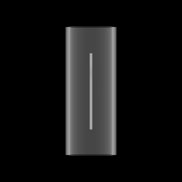

Loading lesson…
Choose the next view
Look at the image and choose another angle.
Imaging geometry
Wire hiddenObserver view
Beam orbit
True scale
True scale
Looking around does not change the X-ray view.
Compare your views
Pinned0°

Inspecting0°
Acquire a different direction to compare.
Fixed scale & contrast. Gold rings mark the centre of the tip.
What would you look at next?
Will the tip appear beyond the outline or overlap it?
Choose an angle, then predict what you will see.
Where is the wire end?
Take another view before answering.
Cross-section near the tip
0°
The ray belongs to the inspected image. The rig can stage a different angle.
What changed your answer?
Think back to the three cases.
- Why did the first view hide the breach?
- Why did 0° and 90° both miss the diagonal breach?
- What did the 3D reveal tell you that the images could not?